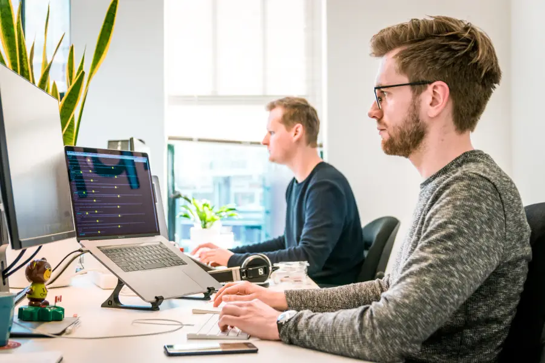

NSF Grant
A four-year study on embodied learning, funded.

University Professor · Portfolio
Research with rigor, teaching with joy — and office hours with real coffee.
About
Research with rigor, teaching with joy — and office hours with real coffee.
Everything on this page is made to be scrolled slowly. The work below is the honest list — outcomes attached, fluff removed.
Currently
Focus — Grant writing
Also — Peer review
Based — Cape Town
Selected work
A four-year study on embodied learning, funded.
A lecture hall of 300 turned into teams of six.

Onboarding that made month one actually work.
Ten years of field data, freely shared.
A peer-mentoring network across three cohorts.
Twenty minutes on failure that got a standing ovation.
Services
Research with rigor, teaching with joy — and office hours with real coffee. Grant writing is where this shows up most — ask for examples on a call.
Research with rigor, teaching with joy — and office hours with real coffee. Peer review is where this shows up most — ask for examples on a call.
Research with rigor, teaching with joy — and office hours with real coffee. Lecturing is where this shows up most — ask for examples on a call.
Research with rigor, teaching with joy — and office hours with real coffee. Mentoring is where this shows up most — ask for examples on a call.
Research with rigor, teaching with joy — and office hours with real coffee. Lab management is where this shows up most — ask for examples on a call.
Research with rigor, teaching with joy — and office hours with real coffee. Publication strategy is where this shows up most — ask for examples on a call.
Contact